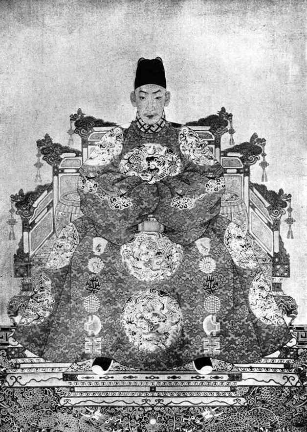

此人一生，上演了绝大的喜剧，其中固然有极权的作用，却显非仅仅以此所可解释者；他的个性，他内心世界的不均衡性、破损性，他人格发育上的障碍，他理想与现实、禀性与角色之间的冲突……都大大超出政治层面之外，而极宜加以人文的剖视。
历史上那么多皇帝，还有无数想当皇帝而当不成的人；而坐在皇帝位子上感到不耐烦、千方百计想逃开的，好像只有他。简单地说，他本来应该做一个无拘无束的野小子，现实却把他绑在厚重的龙床上——就是这么简单的一对矛盾。

明武宗朱厚照。
二千年帝制史上最生动、最富个性的皇帝，一生想了很多办法，来逃避、颠覆皇帝角色。